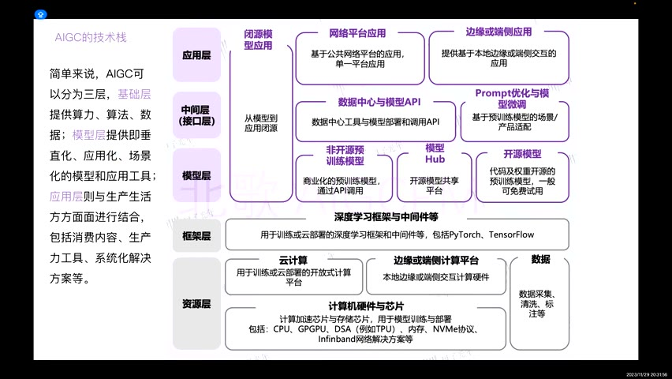

原视频 · 在线回看
点击后联网加载 B 站播放器；本地不下载整段视频。

原视频 · 在线回看
点击后联网加载 B 站播放器；本地不下载整段视频。
来源：产品经理眼中的 AIGC，三集
UP 主：北歌AIGC · 合计 52 分 32 秒 · 深度阅读
链接：https://www.bilibili.com/video/BV1SM411d7Kp/
一个客户希望输入一句想法，系统就替他完成营销方案、生成配图，再自动发布。听起来，似乎只要找一个足够强的模型，把这些动作串起来就行了。真正开始讨论，却会冒出很多问题：这次营销面向谁，哪些信息必须准确，图片要遵守什么要求，谁决定内容可以发布，以及某一步失败以后怎么办？
这些问题构成了 AI 产品工作的日常。模型能够生成内容，打开了新的可能；要把这种可能变成用户愿意持续使用的产品，还需要理解需求、技术和实际工作流程。北歌在这组 2023 年末的课程里，从基础概念讲到岗位工作，再讲学习路径。我们可以沿着同一个问题把三集接起来：一项生成能力，怎样变成能解决具体困难的功能？
人工智能可以用于很多任务。有些任务主要要求判断或选择，例如根据已有信息预测结果、给候选排序，或者判断一个对象属于哪一类。生成式 AI 则把重点放在产生内容：根据输入生成文字、图像、声音、视频或代码。
这两类任务经常会在一个产品里相遇。系统可以先判断用户的问题属于什么类型，再生成回答；也可以先生成几张图，再按照要求挑选候选。因此，“判断”和“生成”帮助我们理解任务差异，并不把产品分成互不相通的两个世界。
AIGC 是 AI Generated Content，即人工智能生成内容。与它经常一起出现的 PGC 和 UGC，分别关注专业生产者和普通用户参与的内容生产。这里比较的是内容由谁、以什么方式产生，不能仅凭这些标签判断质量。专业团队可能使用 AI，普通用户也可能创作高质量内容，几种生产方式完全可以结合。
对产品经理来说，变化在于内容的产生方式更容易被放进软件流程里。用户给出条件，系统就可以尝试生成相应结果。但生成成本下降以后，筛选、修改与使用结果的要求会更加显眼：用户究竟想要多少种方案，哪一种可以采用，哪些错误无法接受，都需要重新考虑。
生成能力还可以参与多步工作。Copilot 常被译作“副驾驶”，强调在人的操作过程中提供帮助；Agent 则通常会根据目标选择下一步，使用工具，再根据结果继续推进。两者之间存在许多中间形态，具体产品允许系统做多少，仍要看实际设计。
回到营销任务，如果系统只帮助改写一段文案，用户还要自己安排后面的步骤；如果系统能够取得材料、生成草案、检查要求，再请求发布确认，它就承担了更多任务组织工作。这里增加的不只有生成内容的能力，还包括工具、状态记录以及处理结果的规则。任务交给系统以后，仍然需要明确哪些动作可以自动执行。
记忆可以帮助保存已经取得的材料与任务状态，但保存信息不等于信息一定正确。Agent 能推进一些任务，也不能据此证明已经达到通用人工智能。北歌把更自主的系统视为值得期待的方向；对一个具体产品，更有意义的问题是它能在什么条件下完成多少工作，以及人应在哪里继续参与。
要让生成能力进入产品，底下需要几层工作。最基础的是计算资源、数据以及支持训练和运行的软件；模型层把这些条件变成具体能力；应用层再把能力接到用户任务上，提供输入、结果呈现和后续操作。
比如，图像生成产品让用户上传参考图、输入描述，再挑选生成结果。用户看到的是应用页面，真正计算图像的是模型，模型运行又依赖硬件和软件环境。产品的体验可能在任何一层受到限制：页面不知道怎样让用户表达要求，模型难以保持人物一致，或者运行速度不足以支持当前使用量。
这个分层帮助我们判断，某个问题应该与谁讨论。交互不清楚，通常先看应用设计；某种图像要求反复无法满足，需要讨论模型与生成方法；任务运行缓慢，还可能涉及部署和计算资源。只说“AI 效果不好”，会把这些不同问题混在一起。
在 2023 年的产业图谱上，可以看到众多厂商与产品分布在不同层次。一家应用公司可以使用别人的模型，也可以把已有能力组合到特定行业中。具体厂商名单会变化，理解它们分别承担什么工作，比记住一张历史名单更持久。
机器学习是一类从数据中学习规律的方法。程序无需由人逐条写完所有判断规则，可以通过训练调整内部参数，再对新的输入作出预测或生成结果。深度学习属于机器学习，主要使用多层神经网络来学习较复杂的表示。
神经网络里的“神经”来自生物启发，但实际使用的是由数学运算组成的模型。我们可以把多层结构理解为多次信息处理：前一层的结果交给后一层，训练则不断调整其中参数。无需先把它想象成一个完整人脑，也不能因为用了这种名字，就认定模型拥有人的全部能力。
自然语言处理，简称 NLP，关心计算机怎样处理人类语言。理解一句话的意图、从文字里提取信息、翻译和生成文章，都在这个范围里。大语言模型是其中一类重要模型，经过大量文本等数据训练，可以完成多种语言相关任务。
许多语言模型采用 Transformer 架构。其中的注意力机制，让模型处理一个位置时能够结合其他位置的信息。对于读者而言，先理解它在解决“当前内容与前后文怎样联系”的问题，就足以接上产品讨论。至于具体计算方法，可以在需要深入模型原理时继续学习，不必把架构名称当成某种万能能力的保证。
GPT 这类生成模型的一项基础训练任务，是根据前面的内容预测接下来的 token。Token 是模型切分和处理文本的单位，可能是一个字、一个词的一部分，也可能对应其他片段。它与中文字数没有固定的一一关系。生成时，模型逐步产生后续内容，所以能够写出流畅文字；文字流畅与事实正确，仍然需要分别判断。
用户最容易直接接触的是提示词，也就是交给模型的任务说明和上下文。提示词可以告诉模型要做什么、依据哪些材料、输出什么形式。它影响这一次或这一类调用时模型面对的条件，通常不需要重新训练模型。
微调则需要训练。我们在已有模型基础上，使用适合目标任务的数据继续调整参数，希望它更稳定地表现出所需行为。微调能否改善结果，取决于数据、训练方法与评价标准，不能因为使用了行业数据就自动认为模型更懂行业。
还要分清“针对特定行业”和“模型参数更少”。一个通用大模型经过微调，可以变成更适合某类任务的模型，但参数量未必因此下降。LoRA 等方法减少的是训练时需要更新的参数，并不等于把基础模型直接缩成一个小模型。LoRA 论文
嵌入，也就是 embedding，把文字或其他对象表示成一组数字，便于比较相似性。在资料检索中，我们可以把问题和文档转换成可比较的向量，再寻找相近的候选。它主要帮助找到可能相关的信息，不会单独完成事实判断，也不保证最相近的内容就是正确答案。
| 做法 | 实际改变的对象 | 产品中常见的用途 |
|---|---|---|
| 提示词 | 模型当前收到的任务与上下文 | 说明要求、格式和参考材料 |
| 微调 | 模型训练得到的参数或适配部分 | 学习特定任务中的行为模式 |
| 嵌入 | 对资料的数字表示 | 查找与问题相近的内容 |
| Token 统计 | 输入与输出的计量 | 理解上下文长度与部分服务成本 |
这些概念放到具体工作里就不难区分。一个回答格式总不合适，可以先检查要求是否清楚；模型根本没有收到相关资料，就要先解决资料获取；需要长期学习某类行为时，才进一步讨论训练。不同问题可能组合使用几种方法，但每一种方法承担的职责要说得清楚。
在图像生成方法中，生成对抗网络 GAN 可以用“生成者与判别者”来理解：生成者尝试产生样本，判别者区分真实样本与生成样本，两者在训练中相互影响。艺术家和评论家的类比能够帮助入门，但实际反馈来自模型训练的数学目标，无需想象它们真的在用语言评论作品。
扩散模型采用另一类思路。训练时，将数据逐渐加上噪声，并学习怎样反向去噪；生成时，可以从噪声开始，经过多步处理形成图像。这个过程不能简单理解成“先把某张原图模糊，再把原图还原”，因为生成新图并不要求手里始终藏着一张对应的完整原图。Denoising Diffusion Probabilistic Models
当用户希望生成结果遵守更具体的构图或姿态，单靠文字描述可能不够。ControlNet 一类方法，可以把边缘、深度或人体姿态等空间条件加入生成过程。例如，想保持人物的动作，可以把姿态作为条件，让模型在这个约束下生成内容。ControlNet 论文
到这里，我们已经可以分清三个问题：图像是否像真的，图像是否按要求生成，图像是否可以用于当前业务。一张图可能很漂亮，却没有保留指定人物；也可能保留了姿态，却在服装细节上出错。产品工作需要知道用户最在意哪一种要求，再和技术同事讨论怎样改善，不能只用“画得好不好看”来概括。
以包装行业为例，一个生成工具可以帮助设计包装图案，但包装企业还要处理设计修改、营销内容和生产管理。北歌因此提出，生成能力如果能够与企业已有流程结合，可能比一个孤立的出图按钮更有价值。
这里出现的 ERP，可以理解为企业用于管理资源与业务流程的软件系统。它与一张图片承担的作用不同。生成包装设计只是工作的一部分，结果怎样进入后续流程、需要哪些信息、由谁继续使用，才决定这个能力能否稳定地参与日常业务。
这种整合能否盈利，还要看企业的具体流程、接入成本和实际使用效果。它首先改变了观察问题的范围：既看模型能够完成哪一步，也看用户在那一步之前和之后做什么。单点生成能力是否足够有用，要放到用户完整工作中判断。
无论是否使用 AI，产品经理都需要理解需求、规划功能、设计体验、协调开发，并在发布后继续处理问题。新技术扩大了解决问题的方法，用户的目标和使用条件仍然需要有人弄清楚。传统产品工作积累的这些能力，仍然能够帮助我们推进 AI 项目。
客户要求一句话完成营销全案时，里面可能包含真实需求：不想反复沟通，希望更快得到可以使用的内容。但“真实需求存在”与“当前技术能够一口气完成全部工作”，是不同判断。产品经理需要把目标拆到具体任务，辨认哪些环节已经有可用方法，哪些仍需补充输入或人工确认。
规划也需要处理先后顺序。第一版交付什么，哪些问题可以稍后解决，算法效果与界面工作怎样安排，都影响项目能否推进。技术变化很快时，尤其容易不断追逐新功能，却没有把原有流程做完整。版本计划与问题收集因此仍然重要。
交互和视觉同样不能长期忽略。用户需要知道怎样表达要求、为什么正在等待、结果能否修改，以及任务失败后怎么办。即使底层能力很新奇，使用过程一直令人困惑，用户仍然可能离开。产品设计把技术能力变成可以理解和操作的过程。
AI 产品新增的一项要求，是更深入地理解技术可以做到什么。产品经理未必需要亲自训练模型，但至少要能够把需求与可能的方法联系起来，并知道什么时候需要算法同事参与。否则，前期承诺很容易超过实际能力，或在可以解决的问题上过早放弃。
时尚行业的模特图是一个清楚的例子。用户需要一组图里的模特保持同一个人，脸部、手部也不能出现明显异常。单独看每一张都可能不错，放到同一组里却发现人物一直变化，这就不满足系列使用的要求。
这个例子说明了评价标准为什么要来自实际业务。若只挑一张最好看的图展示，无法说明人物一致性；若只检查脸，却不检查手和服装细节，也可能漏掉用户无法接受的问题。产品经理需要把“系列看起来像同一个人”“某些部位不能出现瑕疵”等要求说具体，再讨论用何种生成、控制或修复方法实现。
文字产品也存在类似关系。写一条提示词得到一次满意结果，只能说明这一次可行。要把它放进产品，仍然需要检查不同输入下的表现，并为训练或提示词修改建立评价标准。提示词编写与效果验收因此需要放在一起：知道怎样提出要求，也要知道结果达到要求没有。
除了理解技术，产品经理还有机会更直接地组合技术能力。以 ComfyUI 为例，它将图像生成中的不同操作表示为节点，再用连线说明数据怎样在节点之间传递。一个节点接收输入，执行某项处理，再把结果交给后面的节点。
与只填写几个输入框的界面相比，节点式工具把更多处理关系暴露出来。我们可以尝试不同条件、安排多条生成分支，比较不同组合得到的图像。这需要理解每个部件的输入与输出，也因此能帮助产品经理更具体地认识一项功能如何实现。
北歌把这种做法理解为产品工作的一次延伸：自己先搭出可以运行的流程，再和算法同事讨论效果与可行性。这样，沟通材料不只有功能描述，也有实际输入、输出和可以重复尝试的过程。
不过，一个工作流能在开发环境运行，距离可供许多人长期使用的产品还有工作。运行成本、错误处理、稳定性和用户界面，都需要继续检查。节点越多，也不代表方案越好；能够清楚解释每个步骤为何必要，才更容易改进和维护。
算法同事的协作在这里很重要。某个问题可能已有新的算法能够更直接地解决，继续在旧方案上大量修补就未必划算。保持沟通，能够及时知道能力条件发生了什么变化；同时，新方法也需要通过实际任务验证，不能只因更新就认定值得替换。
学习可以分成逐步深入的几个阶段。最开始是主动接触信息，了解行业里正在发生什么。资讯可以帮助发现主题，开源项目则让人进一步看到技术具体提供什么能力。看到一个受关注的项目时，可以继续问它解决哪类问题，以及它与自己熟悉的工作有什么关系。
热度只是发现线索的方式，无法证明技术已经可靠，也不保证存在商业机会。一个项目被大量关注，可能来自新奇的展示、清楚的文档，或者某个真实需求。继续查看它能做什么、还不能做什么，才能从资讯进入理解。
第二阶段是亲自体验。文字产品让我们练习怎样说明任务和限制；图像产品让我们体会文字生成、参考图生成和精细控制的差别；视频产品则进一步增加了时间与连续变化的要求。使用这些工具时，重点是用真实操作建立对能力的感觉，不必把所有产品名字都当成必须购买和注册的清单。
在文字与图像之间，还可以尝试组合使用：先让语言模型帮助整理想表达的画面，再把描述交给图像工具，观察结果与预期差在哪里。修改描述以后再生成，才能知道哪些表达真的影响了结果。仅收藏一份提示词，无法获得同样具体的认识。
第三阶段开始理解背后的方法和工程。模型怎样训练，如何做适配，图像控制部件分别负责什么，以及输入怎样经过后端处理回到页面，都会影响产品选择。这里无需同时钻透所有算法，可以围绕正在使用的功能逐步补足：某项限制为什么存在，哪种修改可能帮助解决它。
最后，自己围绕一个需求做出小项目。从调研与发现问题开始，提出解决方案，安排功能，再选择和组合技术，直到能够展示一次完整使用。这个过程会让前面零散的知识发生联系：用户条件决定功能，功能要求影响方法选择，实际结果又暴露需要继续学习的地方。
生成能力进入产品，需要经过一系列具体判断。基础资源支持模型，模型提供能力，应用把能力放进用户流程；需求分析则帮助我们决定，究竟要让这些能力解决什么困难。
包装行业提醒我们观察生成前后的工作，系列模特图提醒我们把质量要求写具体，节点工作流则提供了可以动手验证方案的方式。它们分别对应产品的使用范围、效果标准与实现路径。
学习也沿着同样的关系加深：先发现有用信息，再亲自使用，随后理解技术与工程，最后完成一个真实的小项目。知道某个能力的名称，亲手试过它，以及理解它能在什么条件下解决问题，是三个需要逐步接起来的层次。
包装客户已经能够生成漂亮图片，为什么还可能觉得产品没有解决自己的问题？沿着设计之前和之后的工作想一想。
一组模特图每张都很好看，却无法被采用，可能是什么要求没有满足？如果只保存最好的一张样例，会漏掉什么？
你搭出的节点工作流已经运行成功，这说明了哪些事情？要让另一个用户稳定使用，还需要继续检查哪些条件？